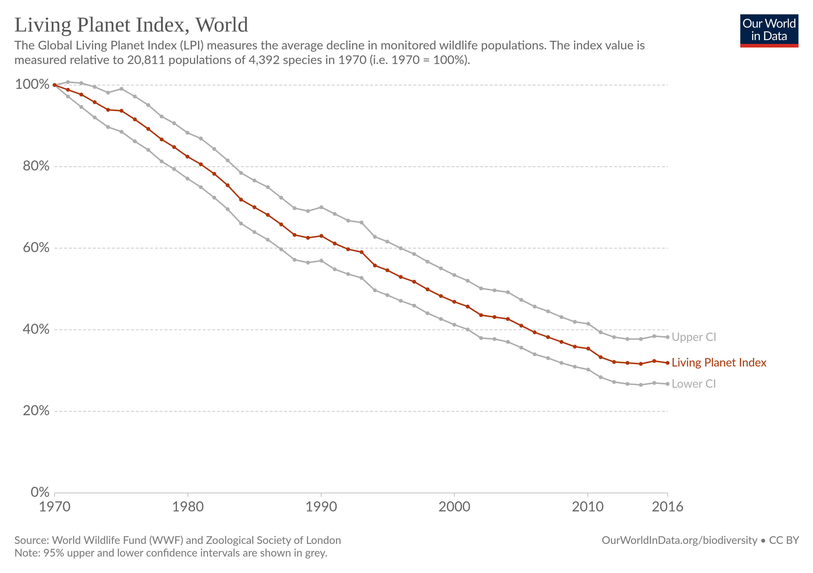

6 Biodiversity
There is no way 8-10 billion people make it over the 2100 line with half of plants & insects at risk of extinction. No way. We’re sawing through the trunk of the tree of life: we will fall too. (Julia Steinberger (Twitter))
First Nations demand a say on climate change. “Indigenous people make up less than 5% of the world’s population, but they manage and protect 80% of global biodiversity.” Guardian
6.1 Economics of Biodiversity
6.1.1 Dasgupta Review 2021
The report proposes
- Recognising nature as an asset and
- Reconsidering our measures of economic prosperity.Recommendations include:
- Making food and energy systems sustainable through technological innovations and policies that change prices and behavioural norms
- Investing in programmes that provide community-based family planning
- Expanding and improving access to protected areas
- Implementing large-scale and widespread investment in nature-based solutions to address biodiversity loss
- Introducing natural capital into national accounting systems.The Dasgupta Review is an independent, global review on the Economics of Biodiversity led by Professor Sir Partha Dasgupta (Frank Ramsey Professor Emeritus, University of Cambridge). The Review was commissioned in 2019 by HM Treasury and has been supported by an Advisory Panel.
The Review calls for changes in how we think, act and measure economic success.
The new framework presented by the Review sets out how we should account for Nature in economics and decision-making.
The Review finds that humanity has collectively mis-managed its global portfolio of assets, meaning the demands on nature far exceed its capacity to supply the goods and services we all rely on.
Humanity must ensure its demands on nature do not exceed its sustainable supply and must increase the global supply of natural assets relative to their current level. For example, expanding and improving management of Protected Areas; increasing investment in Nature-based Solutions; and deploying policies that discourage damaging forms of consumption and production.
.
We should adopt different metrics for economic success and move towards an inclusive measure of wealth that accounts for the benefits from investing in natural assets and helps to make clear the trade-offs between investments in different assets. Introducing natural capital into national accounting systems is a critical step.
.
We must transform our institutions and systems – particularly finance and education – to enable these changes and sustain them for future generations. For example, by increasing public and private financial flows that enhance our natural assets and decrease those that degrade them; and by empowering citizens to make informed choices and demand change, including by firmly establishing the natural world in education policy.
Reactionn from Mark Carney. Ecosystems that have more diverse natural assets are more productive, resilient and adaptable. Just as diversity within a financial portfolio reduces risk and uncertainty, greater biodiversity reduces risks and uncertainty within a portfolio of natural assets. As we awaken to the importance of natural capital, we need to place greater value on sustainability and biodiversity – the precondition to solving the twin crises of biodiversity and climate.
Reactionfrom Christiana Figueres: It is less costly to conserve Nature than to restore it once it’s damaged or degraded and provides the economic rationale for expanding and improving the management of protected areas. We can translate this idea into action by protecting 30% of the planet by 2030. The Review lays the foundation for how to address the twin crises of biodiversity and climate.
Reaction from Andrew Haldane: Most of economics and economic policy has neglected the role of Nature and underplayed the importance of biodiversity in protecting both Nature and, ultimately, us.
Reaction from James E. Hansen: Flourishing nature, restoration of a healthy climate, and economic well-being of all humanity can co-exist, but they require understanding. Dasgupta’s Review helps us begin a journey, which will require decades.
Dasgupta Review Reactions at Launch
Memo Dasgupta:
While most models of economic growth and development recognise that Nature is capable only of producing a finite flow of goods and services, the focus has been to show that technological progress can, in principle, overcome that exhaustibility. This is to imagine that, ultimately, humanity is ‘external’ to Nature. The Review develops the economics of biodiversity on the understanding that we – and our economies – are ‘embedded’ within Nature, not external to it. The Review’s approach is based firmly in what we know from ecology about how ecosystems function, and how they are affected by economic activity, including the extraction of natural resources for our production and consumption, and the waste we produce through these activities, which ultimately damages ecosystems and undermines their ability to provide the services on which we rely. This approach helps us to understand that the human economy is bounded and reshapes our understanding of what constitutes truly sustainable economic growth and development: accounting fully for the impact of our interactions with Nature and rebalancing our demand with Nature’s capacity to supply.
The change required should be geared towards three broad transitions:
Ensure that our demands on Nature do not exceed its supply, and that we increase (sic!!) Nature’s supply relative to its current level.
Change our measures of economic success to guide us on a more sustainable path.
Transform our institutions and systems – in particular our finance and education systems – to enable these changes and sustain them for future generations.
Not so long ago, when the world was very different from what it is now, the economic questions that needed urgent response could be studied most productively by excluding Nature from economic models. Nature entered macroeconomic models of growth and development in the 1970s, but in an inessential form. 3 The thought was that human ingenuity could overcome Nature’s scarcity over time, and ultimately (formally, in the limit) allow humanity to be free of Nature’s constraints. But the practice of building economic models on the backs of those that had most recently been designed meant that the macroeconomics of growth and development continued to be built without Nature’s appearance as an essential entity in our economic lives.
The natural world is studied in relation to the many other assets we hold in our portfolios, such as the vehicles we use for transport, the homes in which we live, and the machines and equipment that furnish our offices and factories. But like education and health, Nature is more than a mere economic good. Nature nurtures and nourishes us, so we will think of assets as durable entities that not only have use value, but may also have intrinsic worth. Once we make that extension, the economics of biodiversity becomes a study in portfolio management.
Finance plays a crucial role. A significant portion of the responsibility for helping us to shift course will fall on the global financial system.
To leave Nature alone so that it is able to thrive is to invest in it.
The risks associated with biodiversity loss – reductions in the productivity and resilience of ecosystems along supply chains – have significant macroeconomic and financial implications. Far more global support is needed for initiatives directed at enhancing the understanding and awareness among financial institutions of Nature-related financial risks, learning and building on the advances on climate-related financial risks.
Central banks and financial supervisors can support this by assessing the systemic extent of Nature-related financial risks. A set of global standards is required. They should be underpinned by data that are both credible and useful for decision-making. Businesses and financial institutions could then be obliged to integrate Nature- related considerations with their other objectives. The idea ultimately is to have them assess and disclose their use of natural capital. The Task Force on Nature-related Financial Disclosures, (TNFD) established in 2020, is a step in that direction.
Integrating the protection of biodiversity with the fiduciary duties of institutional investors and asset managers would be a way to ensure their investment policies account for natural capital.
The time horizonwithin which financial actors plan and act is, unhappily (!!sic!!), not more than a few years. Financial regulators and supervisors can play a key role in the necessary shift by changing their own assessment horizons and using their regulatory powers.
Moral Issue Ultimately though, it is we citizens who can bring about such changes. (!!sic!!) Connecting with Nature needs to be woven throughout our lives. The three pervasive features of Nature – mobility, silence and invisibility – mean that the consequences of actions which desecrate Nature are often untraceable to those who are responsible. We will have to rely also on self-enforcement, that is, be our own judge and jury.
Memo Main Report: Now we are plundering every corner of the world, apparently neither knowing or caring what the consequences might be.
Today, we ourselves, together with the livestock we rear for food, constitute 96% of the mass of all mammals on the planet. Only 4% is everything else – from elephants to badgers, from moose to monkeys. And 70% of all birds alive at this moment are poultry – mostly chickens for us to eat.
GDP The contemporary practice of using Gross Domestic Product (GDP) to judge economic performance is based on a faulty application of economics. GDP is a flow (so many market dollars of output per year), in contrast to inclusive wealth, which is a stock (it is the social worth of the economy’s entire portfolio of assets). Relatedly, GDP does not include the depreciation of assets, for example the degradation of the natural environment (we should remember that ‘G’ in GDP stands for gross output of final goods and services, not output net of depreciation of assets). As a measure of economic activity, GDP is indispensable in short-run macroeconomic analysis and management, but it is wholly unsuitable for appraising investment projects and identifying sustainable development. Nor was GDP intended by economists who fashioned it to be used for those two purposes. An economy could record a high rate of growth of GDP by depreciating its assets, but one would not know that from national statistics.
VALUES Correct economic reasoning is entangled with our values. Biodiversity does not only have instrumental value, it also has existence and intrinsic value, perhaps even moral worth.
(Use) Value vs (Intrinsic) Worth vs (Social) Worth vs (Inclusive) Wealth Nature is more than a mere economic good. Nature nurtures and nourishes us, so we will think of assets as durable entities that not only have use value, but may also have intrinsic worth. Once we make that extension, the economics of biodiversity becomes a study in portfolio management.
In order to judge whether the path of economic development we choose to follow is sustainable, nations need to adopt a system of economic accounts that records an inclusive measure of their wealth. The qualifier inclusive says that wealth includes Nature as an asset.
The contemporary practice of using Gross Domestic Product (GDP) to judge economic performance is based on a faulty application of economics. GDP is a flow (so many market dollars of output per year), in contrast to inclusive wealth, which is a stock (it is the social worth of the economy’s entire portfolio of assets)
Inclusive Wealth The accounting value of an economy’s stock of capital goods is its inclusive wealth. The qualifier signals that the notion of wealth adopted here differs from the one in common use in two ways: (i) accounting prices are not necessarily market prices; and (ii) in addition to produced capital, wealth includes human capital and natural capital. As accounting prices measure the social worth of goods and services, the inclusive wealth of a nation is the social worth of its capital goods. As noted previously, by ‘social worth’ we mean not only the worth to people who are alive at that date, but also to future people.
Valueing Biodiversity Ecosystems are capital goods. Biodiversity is a characteristic of ecosystems. In the terminology introduced in Chapter 1, it is an enabling asset.
Humanity’s future will be shaped by the portfolio of assets we inherit and choose to pass on, and by the balance we strike between the portfolio and the size of our population. Assets are durable objects, producing streams of services. Their durability enables us to save them for our own future, offer them as gifts to others, exchange them for other goods and services, and bequeath them to our children. Durability does not mean everlasting. Assets depreciate, but unlike services they are not fleeting.
Capital Assets Perhaps because financial capital has figured prominently in economists’ writings, the qualifier ‘capital’ is sometimes added to assets, as in ‘capital assets’. Assets acquire their value from the services they provide over their remaining life
Wealth Accounts a deep connection between inclusive wealth and intergenerational well-being. We prove that any change in one is mirrored in a corresponding change in the other. The correspondence is named the wealth/ well-being equivalence theorem. We show that the theorem offers a way to judge whether the development path an economy is following meets the requirement of sustainability. The theorem is also shown to be the right criterion for evaluating public policy. Inclusive wealth is the coin with which economic progress or its absence should be measured. Private companies prepare balance sheets. The theorem shows why countries should now prepare wealth accounts.
Capital Goods vs Enabling Assets In our classification, there are thus three categories of capital goods and a wide range of enabling assets. Three-way partition of capital goods: produced capital (buildings, roads, ports, machines, instruments), human capital (population size, health, education, reputation, knowledge and skills) and natural capital (ecosystems, sub-soil resources). What remains – institutions and practices, more generally, social capital, and publicly available knowledge – we will call enabling assets, because they confer value to the three classes of capital goods by facilitating their use.
** Economic Evaluation** Management of a society’s portfolio of assets involves policy analysis and sustainability assessment. We call the two generically as economic evaluation.
(Green Book 6.48) A focus solely on the marginal valuation of a loss in services may overlook the potential for large reductions in stocks.
Pollinators At smaller levels of aggregation, total values of Nature’s services can be meaningful and yet not be useful for policy. It is tempting, for example, to cite the estimate that pollination contributes an annual £510-690 million to the UK’s agricultural production as providing a reason for restoring the population of pollinators (Breeze, Roberts, and Potts, 2012). But should we regard it to be a large or small figure? Based on 2019 data from the UK Office of National Statistics, as a proportion of the UK’s annual agricultural output, it is approximately 5%. As a proportion of the UK’s GDP, it is 0.03%, a negligible figure. So why care whether any pollinators are left? The reason we should not be dismissive of pollinators is that proportional figures do not signal worth. National asset management requires that pollinators enter projects with their accounting prices. Chapters 2 to 4 demonstrate that pollinators may be of great value even if their measurable services to GDP are of negligible worth.
Dasgupta Review Final Report (pdf final (full) report) (pdf short) (pdf messages) (pdf Interim Report (April 2020))
Observations
Borgelig idealisme
Document Searches:
‘capitalism’: 2 entries
‘doughnut’: 0
6.1.2 Daggupta Review Deconstructed
Spash Abstract
The Dasgupta Review is the latest attempt at justifying financialisation of Nature, but also much more. It represents a high point in applying concepts of capital and wealth accumulation comprehensively to all aspects of human and non-human existence. Unravelling the flaws in the arguments, contradictions and underlying motives requires both understand of and cutting through the specialist language, neoclassical economic models, mathematics and rhetoric. We offer a critical guide to and deconstruction of Dasgupta’s biodiversity economics and reveal its real aim. Framing critical biodiversity loss as an issue of asset management and population size is a blind to avoid questioning economic growth, which remains unchallenged and depoliticized despite apparently recognizing natural limits. Dasgupta ignores long-standing problems with capital theory and social cost–benefit analysis. Rather than a scientific review of biodiversity economics he offers impossible to achieve valuation, based on old flawed theories and methods, embedded in an unsavoury political economy.
Spash Memo
There is no error in this ‘independent’ report having been commis- sioned by the Treasury department under a ruling Conservative Party. While pricing, trading-off and optimizing are traditional economic fare, the political vision here involves a far reaching public policy agenda, promoting the total domination of non-financial aspects of life by finance.
Central to Dasgupta’s whole approach is an analogy between biodiversity protection and finan- cial asset management. Destruction of Nature is blamed on a misallocation of capital investment, with too much going to produced and human capital relative to natural capital. Curbing biodiver- sity destruction is then reframed as optimal asset management by a ‘citizen investor’ guided by ‘accounting prices’ that correct all market failures by internalizing externalities after calculations made by experts in social cost–benefit analysis. Cost–benefit analysis is a calculus for maximizing an economy’s inclusive wealth’. This builds on the UN supported study entitled The Economics of Ecosystems and Biodiversity (TEEB, 2010) that moved from monetary valuation to capturing value via new financial instruments, and linked directly into proposals to ‘hardwire biodiversity and ecosystems services into finance’ (UNEP Finance Initiative, 2010).
On this basis, and supported by powerful institutions and lobby groups, The Review places mon- etary valuation of Nature at the forefront of national and international environmental policy. The world is turned upside-down, so that wealth accumulation, sustainable growth (=development) and ‘the economy’ are the things in need of being protected, not Nature or biodiversity.
The Review in its full 610 page version is a user unfriendly technical report packed with standard neoclassical economic (mathematical) models, annexes and specialist terminology, but the abridged 100 page version misguides as to the problems underlying The Review and its failings.
Financial asset management is an inappropriate analogy for biodiversity conservation.
While ostensibly about biodiversity loss The Review is in fact a broad reaching orthodox econom- ist’s vision of how the entire world should operate. Humans are consumers who aim to maximize their utility, which can be variously described as happiness, welfare or (Dasgupta’s preference) well- being. Despite claims that the model is not restricted to ‘individuals’, that is exactly what is done, because the ‘economic agent’ – regardless of whether a generation, government or family – is an identical optimizing unit. This agent is only concerned to maximize utility, which through a series of equivalents becomes money; that is, utility = well-being = wealth = capital = money values.
Intergenerational well-being is defined as a function of four factors: consumption, investment in human capital, investment in technological innovation and extraction of natural resources. How- ever, the overarching objective is to maximize intergenerational well-being deemed equivalent to inclusive wealth. Maximizing inclusive wealth is considered to auto- matically maximize intergenerational well-being which is then framed as the objective of policy- making. Dasgupta terms this his ‘sustainable development theorem’
Dasgupta talks of ‘the economy’ (a phrase used 91 times) in the singular, as if only his chosen economic system could exist – an idealized market capitalism. All variety in actual social provision- ing systems and alternatives across time and space are conveniently ignored. Also absent from the picture are corporations, one of the most powerful institutions in the modern economy, and the role of organized labour unions. What is recognized is that ‘the economy’ suffers imperfections because prices fail to reflect social values. This means government intervention must be allowed, although Dasgupta repeatedly emphasizes its dangers and especially market distorting (as opposed to market correcting!) subsidies. The question then becomes what form government intervention should take? Addressing market failures is the job of what is in effect a central planner, but presented in the guise of a female ‘citizen investor’ or ‘social evaluator’. Governance for Dasgupta is about optimal investment in capital assets. Nature is something that gives a rate of return and that economists have failed to adequately include in their investment portfolios. He repeatedly remarks that: ‘The fault is not in economics; it lies in the way we have chosen to practise it’
That price-making markets fail to value things that matter to humans, and non-humans, is reduced down to accountancy, getting the prices right and social CBA. For Dasgupta the term ‘accounting prices’ is substituted for the traditional economic terms social cost or shadow prices.
The favoured mainstream economic accounting convention is employed to calculate net present values assuming all future humans will be better-off in terms of having more consumption. Dasgupta – like other mainstream economists such as Nordhaus and Stern – relegates the fate of the future to a theoretical dispute over discount rates.
In summary, Dasgupta is proposing the optimal management of life on Earth in all its facets, an all encompassing approach, made possible by assuming the only thing that matters is maximizing social value measured as monetary wealth invested in a capital stock. The aim of life is to maximize rates of return on investments. Achieving social good requires that the wise ‘citizen investor’ choose the optimal portfolio of capital assets.
This means Dasgupta’s approach to everything – human fertility, education, trust in society, species existence, the sacred in indigenous communities, ecosystem structure and function – is reduced down to the value of capital and returns on capital investment.
Produced Capital
As a neoclassical economist, Dasgupta opts for (ii), claiming that: ‘[a]ssets acquire their value from the services they provide over their remaining life’ (Dasgupta, 2021, p. 138). This leads to an asset management approach. Different types of assets, or forms of capital, are required to produce the same rate of return in order to achieve an optimally managed investment portfolio (i.e. that maximizes returns by equating returns on every investment at the margin). More simply, this means whether investing in produced capital, education or blue whales the economic agent (‘citizen investor’) seeks the same return. What is ignored by Dasgupta is a long history, that involved his own University and Economics Department, concerning problems with measuring capital.
A further problem, largely unrecognized by most economists (from either Cambridge or else- where), arises due to environmental pollution. As has been explained, capital is a monetary value dependent either on its cost of production or the value of what it produces. However, those costs and future return values are only valid for economic resource allocation if they take into account all associated social costs and benefits in the production and consumption process. Due to the all per- vasive character of pollution that means all prices must be adjusted, but to what and by whom? If no objective value exists then economic theory cannot justify prices as valid reflections of a ‘true’ social value, let alone tell us what is the stock (i.e. value) of produced capital, or any other capital. The Dasgupta Review provides an excellent example of the contradictions and how economists attempt to fudge all these issues. Dasgupta acknowledges the essential and central role of a common metric for his capital approach: It is not enough to say that houses can be measured in physical units (floor space, say), they need to be compared with other capital goods, such as cars. We need a common unit. Valuing assets is a way to do that. (Dasgupta, 2021, p. 323) However, he is also repeatedly forced to admit the practical problems of valuing things and the capital stock in particular. Yet, he assumes some social evaluation process will take care of finding the ‘true price’ by valuing everything in a money metric. Social CBA will be conducted by expert economists, or a ‘social evaluator’ nay ‘citizen investor’, who will miraculously solve all problems. Faith enters by the door and science leaves by the window.
Natural Capital
Dasgupta (2021, p.3) states that: ‘In the Review, the terms Nature, natural capital, the natural environment, the biosphere, and the natural world are used interchangeably’. More simply all con- cepts of Nature are reduced to capital. Natural capital is an anthropocentric and utilitarian view of Nature, where Nature is reframed as contributing goods and services solely for human well-being (Hache, 2019). In The Review, ecosystem services are classified, following the Common Inter- national Classification of Ecosystem Services (see Haines-Young & Potschin, 2018), as either:
- Provisioning services: plants and animals for nutrition, materials or energy;
- Regulating and maintenance services: such as habitat and gene pool protection, flood control, pest and disease control; or
- Cultural services: covering intangible things such as the enjoyment and spiritual value of Nature.
Anything that fails to contribute to human well-being is ignored, deemed worthless, which again places valuation at the centre of the whole approach.
Even if the, so called, stock of natural capital were known in physical terms it would, like produced capital, require a common value basis to make diverse elements comparable and commensurate. Numbers may be produced, as under existing ‘experimental’ approaches (e.g. Office for National Statistics, 2020), but aggregate numbers for national accounting do not help optimum portfolio investment (i.e. indicate rates of return on different investments). They also fail to meet the requirements of the neoclassical economic approach for scarcity prices of resources, the ‘true’ social values, called ‘accounting prices’ by Dasgupta. Those values, as Dasgupta repeatedly tells us, cannot be found in any market. As he makes clear: Only social cost-benefit analysis, using the same accounting prices as are estimated for sustainability assessment, would tell the social evaluator which investment projects are socially desirable. Decades ago environmental CBA developed a range of methods for imputing monetary values, but with limited applicability under specific conditions (Hanley & Spash, 1993; Spash, 2005). For a start, these methods only apply to marginal changes in environmental goods or services, not least because the value of money itself (its marginal utility) alters when there are large changes affecting income; also, economic welfare measures assume other things (e.g. all other prices) remain the same which is violated by large changes. Clearly things like mass extinction of species and human induced climate change are not small, marginal, changes.
There are two major failings in The Review when valuing natural capital. First is the inability of economists to actually apply their utility preference value theory to obtain ‘true’ social costs (Das- gupta’s accounting prices). Second is the divorce between the economic theory of value and a range of alternative value theories held to exist in human societies.
An even more basic problem, with appealing to human preferences, occurs when people do not understand complex environmental issues, or terminology (e.g. biodiversity), or have never encountered a species or know nothing of the object of value (e.g. genes, microbes or distant eco- systems). The problems with respect to biodiversity have long been recognized.
However, many economists, including Dasgupta, naïvely refer to establishing ‘true values’ as if people had, stored away in their brains, values to every entity on the planet in every quantity and quality in which it might appear in an economic equation to be traded-off against something else, and that they can immediately produce such values on demand when asked their maximum willingness-to-pay (for or against an environmental change).
Then there is the disconnect between marginal values sought by social CBA and the aggregate national income accounts covering the entire stock of natural capital. The study Dasgupta takes as exemplary is by Managi and Kumar on ‘inclusive wealth’ for a total (not marginal productivity) value. Even this proves problematic. We are told that due to ‘data limit- ations’ natural capital was taken to be minerals and fossil fuels, agricultural land, forests as sources of timber and fisheries. The topic of biodiversity is totally absent. Instead of social values (aka accounting prices) we have a list of rather simple marketed inputs to production and consumption using market prices. Both theory and relevance go out the win- dow, once again. As Dasgupta’s rhetoric rises, the failure of theory to translate into practice becomes transposed into theory acting as a surrogate means by which to justify cutting corners.
As Dasgupta’s rhetoric rises, the failure of theory to translate into practice becomes transposed into theory acting as a surrogate means by which to justify cutting corners. In practice, empirical corners have to be cut. An understanding of the tight [sic] theory helps accoun- tants to justify the corners they choose to cut. He then goes on to explain that: >Moreover, there are Nature’s objects and sites of cultural significance that resist being valued and placed in comparison to marketed goods. Societies record their presence and allocate funds to preserve and restore them. They fall outside the scope of national accounts. (Dasgupta, 2021, p. 337)
What then are the implications of recognizing the existence of things ‘that resist being valued and placed in comparison to marketed goods’? Apparently nothing! The divorce from, and applicability to, reality of Dasgupta’s theory is for him irrelevant because ‘[e]mpirical work is forced to cut theoretical corners’.
Yet, despite the problems and contradictions Dasgupta implies all barriers to monetary valuation can be overcome. Of course they must be, if his sustainability theorem, is to progress into policy:
economic worth of natural capital remains the greatest barrier to an understanding of economic devel- opment. Until that ignorance is lifted, policy analysis will remain crippled and sustainability will continue to be a notion we admire but cannot put into operation. (Dasgupta, 2021, p. 353)
He is correct that his policy analysis is indeed crippled. However, that policy analysis can be con- ducted without his approach seems to pass him by, along with the impossibility of ever actually implementing anything close to what he suggests, regardless of how many theoretical corners he is prepared to cut.
The idea that time with a dying loved one, a non- human species, an ecosystem or anything else cannot be valued in this way is highly problematic for such economic accountancy, as adopted by Dasgupta, so it must be relegated to irrelevance by side- lining (his favourite tactic). Mention something and its importance and then go about your econ- omic business as normal. The result is to totally ignore plural values and alternative (non preference utilitarian) systems of ethics as having any relevance to how ‘the economy’ should be run or Nature valued.
The basic fact is that if significant things cannot be valued as proposed, either due to inadequate methods or existence of plural incommensurable values, then the whole approach of The Review falls apart, along with neoclassical value theory. Money is used to create the illusion of a common metric. As we saw for the case of produced capital, the only sense to be made of such a singular concept as capital is to convert it to a common value basis. Whether returns to natural capital or the total stock of natural capital, there must be some means of summing-up everything that con- stitutes capital, which is impossible in physical terms. More frogs do not equate to fewer tigers. What then is ‘natural capital’? Without the money metric it is non-existent, a meaningless econ- omic abstraction totally divorced from reality. The myth of optimal resource management directing environmental policy is then dead.
Biodiversity is described as ‘a characteristic of natural capital […] a factor influencing the pro- ductivity of natural capital, or more concretely, ecosystems’. It is reduced down to an input to production, something that adds productivity to natural capital. Dasgupta claims that because biodiversity is only an enabling asset there is no need to measure its value directly.
Exactly why Dasgupta wants to relegate biodiversity to a more functionary sub-role is unclear.
Research from the early 1990s onwards uncovered was that people, when asked to state their preferences, may, in significant numbers, reject the economists valuation approach and instead hold multiple and incommensurable values. They may hold rights-based positions and refuse to trade-off values.
This economics fails to empower ecologists, respect Nature, pay attention to biodiversity science or even listen to what people say when interviewed; it has been doing exactly the opposite.
OptimalExtinction
Preserving any species, or anything, that does not payback profit at the going commercial rate is inefficient. All slow growing species should be optimally and efficiently terminated. The stock should be liquidated and the capital invested else- where.
We should remember Dasgupta’s words, that: ‘Ecosystems are capital goods, like pro- duced capital (roads, buildings, ports, machines)’, while ’Biodiversity is a characteristic of ecosystems.
As Dasgupta himself makes very clear:
An asset that has a lower rate of return than another will not be chosen. A portfolio is the best for the agent only if the assets in it have the same rate of return.
Quite simply, much of Nature is a bad investment and should be eradicated because financial returns are higher elsewhere, and this financial profiteering is exactly how capitalism has been operating for centuries and why we confront an ecological crisis. Dasgupta’s capitalist approach to Nature does not preserve anything, it simply makes investors’ money, it accumulates financial capital. Biodiversity valued as a financial asset will be destroyed, not saved, by Dasgupta’s capitalist approach.
Population Growth
The Review puts great emphasis on the size of the global population, in the tradition of Malthus, while insisting that it does not. As Fletcher notes:
the interrelation between social inequality and ecological destruction can be explained in one of two ways: as a function of human population growth creating resource scarcity; or as a product of a capi- talist economic system demanding unsustainable resource use to facilitate economic growth that has little to do with satiating the needs of the human collective, but rather with enriching a select few at the expense of the rest—as well as at the expense of the planet as a whole.
The Review clearly chooses the first. The focus on global population size, natality rates and poor women’s education implicitly shifts responsibility and blame for biodiversity loss away from capital accumulation and on to developing countries and women.
Biodiversity conservation is not asset management
Dasgupta equates biodiversity conservation with asset management. The ana- logy attempts to avoid structural change and maintain the current economic system with relatively minor adjustments. This asset misallocation framing of biodiversity loss enables the continuation of economic growth subject to an added condition of (hopefully) not destroying life on Earth.
Dasgupta tries to claim all conservation requires investment. In fact, Nature can regenerate with- out human intervention (which in modernity is often the cause preventing this from occurring). Where ecosystem restoration involves opportunity costs to curb destruction, the aim is not a return on an investment. Preventing the destruction of Nature concerns stopping harm. Neither is pre- venting harm to others (human or non-human) a matter of profiteering or accumulating wealth. The view that biodiversity destruction is an issue of bad asset management is therefore far from self-evident and on the contrary quite controversial. The more prevalent and contrasting view is that biodiversity destruction has always been a corollary of capital accumulating growth, since such economic activities are about appropriation and transformation of natural resources.
The analogy claims price-making markets are efficient, able to price scarce resources and allocate them optimally. Public policy is seen as fostering new environmental markets to provide the ‘right incentives’ for private actors to choose the optimal allocation of resources that would maximize and sustain economic growth. This aligns neoclassical economics with the neoliberal Wall Street Consen- sus that seeks to transform the State from a sovereign actor to a standard setter, provider of subsidies and means of de-risking private sector investment. That markets cannot achieve efficient allocation is why Dasgupta requires a ‘social evaluator’ and accounting (shadow) prices based on social CBA.
While Dasgupta highlights government subsidies, as a key market failure, he ignores oligopoly and monopoly power as actualized today in the Davos elite of billionaires and institutionalized in the multi-national corporation.
An asset manager’s job is to maximize the return on a portfolio for a given investment mandate allowing for risk taking. Optimization, whether of financial returns, or well-being, reduces human action to pushing the limits and regulatory constraints to achieve maximum exploitation of others (human and non-human) in order to make profit; what Kapp (1978/1963) termed cost-shifting. When exploiting Nature and destroying biodiversity it assumes implicitly, and incorrectly, that sufficiently complete and certain knowledge exists to avoid high stakes failures and catastrophic out- comes. Crucially, optimizing reduces the margin for error and increases the risk of failure. Nature, by contrast, avoids optimization and is full of redundancies, that make for resilience and robustness.
Uncertainty
Distinguishing between different types of unknown futures is important to understanding what actions should be undertaken. Typically economists reduce all unknowns to risk, which is the prob- ability of an event occurring. So when considering a simple coin toss, for example, we can expect a 50:50 chance of heads or tails and then repeatedly toss the coin to see. In this case the possible future states or events are known and so are the probabilities. However, uncertainty and incertitude arise when we either only know the possible outcomes, but not their probability, or we know the risk, but not all the potential events. Human induced climate change is a good example, where future states involve unique events, such as the melting of the West Antarctic ice sheets, an unre- peatable experience, a knowable event without a probability distribution. We suffer from both par- tial ignorance and social indeterminacy, not least because humans are also unpredictable in their actions which may confound expectations. An important distinction is then that between weak uncertainty where events and probabilities can be assigned (Spash, 2002a, Chapter 4), and strong uncertainty where ignorance and indeterminacy dominate (Spash, 2002a, Chapter 5). The latter requires a different approach to public policy that entails precaution (Stirling, 2017), not risk man- agement or risk taking. Yet, despite these distinctions having been recognized a century ago by Key- nes (1988/1921), economists, like Dasgupta, Stern, Nordhaus and others, persist in reducing strong to weak uncertainty. While asset management and financial markets are generally designed to handle risk, they are unable to handle strong uncertainty. In fact, the greater strong uncertainty the more uncertain are the prices and the greater the chance of sudden and unexpected price crashes (Slovik, 2011). This inability to deal with strong uncertainty makes the asset management analogy both erroneous and dangerous. The analogy encourages misleading impressions of substitutability and lognormal probability distributions, a false sense of predictability and promotes inappropriate financial concepts (such as diversification).
Asset management is a profession where there is a huge gain/lose asymmetry in decision-mak- ing, i.e. between potential gain and personal risk. Rewards are typically a function of both the quan- tity of assets under management and over-performance, but when asset managers fail they can only lose their job. They are incentivised by design to take a great deal of risk. The analogy implies this type of hugely asymmetric pay-off and limited accountability is the appropriate model to be adopted by policy-makers, Dasgupta’s citizen investor. The psychology of a high stakes gambler hardly seems an ideal for public policy, especially where responsibility extends to existential threats to others (both non-human and human).
The psychological aspect of financial markets involves group behaviour creating instability. For example, the much-praised benefits of diversification (i.e. risk spreading) evaporate when a big crises hits, because fear dominates behaviour (all correlations jump towards one). The ‘risk appetite’ of market participants disappears, and trading positions are closed to stop losses or lock-in profits in assets unrelated to the original event. This exemplifies how financiers’ behaviour is dominated by interdependent expectations. Keynes (1978/1936, p. 156) described professional investment as like a newspaper competition in which the competitors have to pick out the six prettiest faces from a hun- dred photographs, the prize being awarded to the competitor whose choice most nearly corresponds to the average preferences of the competitors as a whole. You win not by judging who has the prettiest face, but by guessing whom others on average will likely think has the prettiest face, while they guess how you (and others) think they will think, and you guess how they think you (and others) will think, and so on. Investment is game-playing not truth seeking. It requires very different skills from Nature conservation or biodiversity preservation, where traditional and scientific knowledge provide causal descriptive understanding of biophysical structure that informs social practice.
Conclusions
The fact that governments have budgetary choices and trade-offs to make does not imply, in any way, that environmental policies are similar to asset management.
Using the language and concepts of finance and capitalism to describe loss of biodiversity is far from neutral, certainly not scientific let alone objective, and misunderstands the object of concern.
Promoting such an incorrect framing is deeply problematic and worrying, because it will not only misdirect public policy on biodiversity loss but also fail to address the structural causes of the ongoing social-ecological and economic crises facing humanity.
Spash (2021) The Dasgupta Review deconstructed: an exposé of biodiversity economics (pdf)
6.3 Degradation Loss
Ellis Significance
The current biodiversity crisis is often depicted as a struggle to preserve untouched habitats. Here, we combine global maps of human populations and land use over the past 12,000 y with current biodiversity data to show that nearly three quarters of terrestrial nature has long been shaped by diverse histories of human habitation and use by Indigenous and traditional peoples. With rare exceptions, current biodiversity losses are caused not by human conversion or degradation of untouched ecosystems, but rather by the appropriation, colonization, and intensification of use in lands inhabited and used by prior societies. Global land use history confirms that empowering the environmental stewardship of Indigenous peoples and local communities will be critical to conserving biodiversity across the planet.
Ellis Abstract
Archaeological and paleoecological evidence shows that by 10,000 BCE, all human societies employed varying degrees of ecologically transformative land use practices, including burning, hunting, species propagation, domestication, cultivation, and others that have left long-term legacies across the terrestrial biosphere. Yet, a lingering paradigm among natural scientists, conservationists, and policymakers is that human transformation of terrestrial nature is mostly recent and inherently destructive. Here, we use the most up-to-date, spatially explicit global reconstruction of historical human populations and land use to show that this paradigm is likely wrong. Even 12,000 y ago, nearly three quarters of Earth’s land was inhabited and therefore shaped by human societies, including more than 95% of temperate and 90% of tropical woodlands. Lands now characterized as “natural,” “intact,” and “wild” generally exhibit long histories of use, as do protected areas and Indigenous lands, and current global patterns of vertebrate species richness and key biodiversity areas are more strongly associated with past patterns of land use than with present ones in regional landscapes now characterized as natural. The current biodiversity crisis can seldom be explained by the loss of uninhabited wildlands, resulting instead from the appropriation, colonization, and intensifying use of the biodiverse cultural landscapes long shaped and sustained by prior societies. Recognizing this deep cultural connection with biodiversity will therefore be essential to resolve the crisis.
Ellis Memo
Natural History Is Human History
Contemporary patterns of biodiversity-rich areas, areas priori- tized for conservation, and those specifically labeled “natural” all show long and significant histories of human use

Only about 17% of Earth’s land was without evidence of prior human habitation or use over the past 12,000 y. Yet, even this low percentage is certainly an overestimate, based on growing evidence that the most up-to-date global change models remain biased toward underestimating the importance of early human habitation and land use, especially in areas where seasonal and temporary habitation and use of land predominates
6.4 Living Planet Index
Ritchie
The Living Planet Index is the biodiversity metric that always claims the headlines. Unfortunately many of these headlines are wrong. The index is very easy to misinterpret.
The Living Planet Index reports an average decline of 68% across tens of thousands of wildlife populations since 1970. This does not tell us anything about the number of individuals, species or populations lost, or even the share of populations that are shrinking.
Before reporting on the Living Planet Index we should understand what it actually tells us about the world’s wildlife. We should also be aware of the misconceptions and pitfalls of using this index to capture the changes in more than 20,000 of the world’s animal populations.
“In the last 50 years, Earth has lost 68% of wildlife, all thanks to us humans” (India Times)
“Humanity has wiped out 60% of animal populations since 1970, report finds” (The Guardian)
“We’ve lost 60% of wildlife in less than 50 years” (World Economic Forum)
These are just three of many headlines covering the Living Planet Index. But they are all wrong. They are based on a misunderstanding of what the Living Planet Index shows.
What does ‘average decline’ actually mean?
The Living Planet Index (LPI) measures the average change in the number of individuals across the world’s animal populations. A ‘population’ is defined as a species within a geographical area. So, despite being the same species, the African elephant in South Africa and Tanzania are counted as different populations.

The Living Planet Index tells us that studied animal populations have seen an average decline of 68% since 1970
In the latest report it covered 20,811 populations of 4,392 species across the world. It only covers vertebrate species – mammals, birds, fish, reptiles and amphibians. It includes a large number of populations from each world region, however the tropics tend to be underrepresented relative to Europe and North America. This is not ideal, considering the tropics are home to the greatest diversity of species and is where wildlife is most threatened.
This reveals two further limitations. First, it only covers a tiny percentage of species: Only 15% of known bird species; 12% of mammals; 5% of fish; 4% of amphibians and merely 2% of known reptile species. It’s hard to say how representative the available data is: it’s often the case that the species we are most concerned about (deservedly) get the most attention in the research. Second, many taxonomic groups are not included at all – nothing on insects, fungi, coral or plants. This is largely due to data availability – it’s easier to count bears than ants.